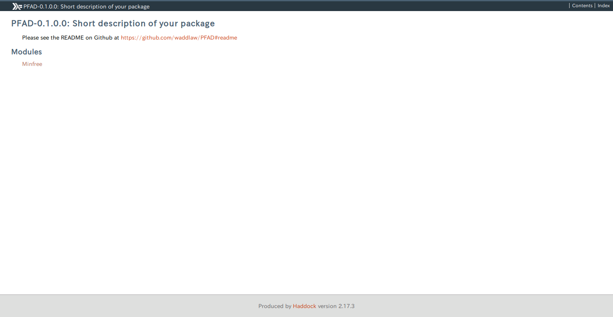
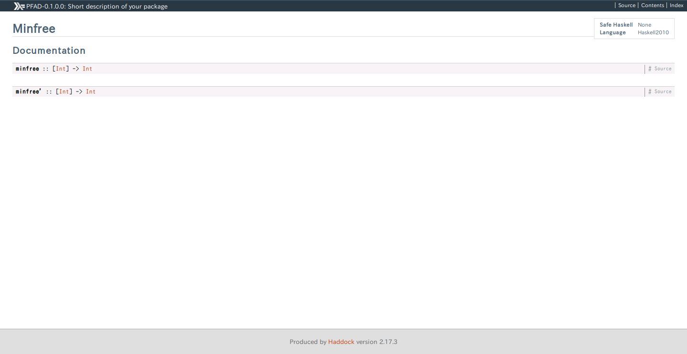

stack には Haddock 形式と呼ばれる形式でコメントを残すことで、そのコメントを自動的にドキュメントに変換する stack haddock コマンドがあります。
まずは特に何もせずに Haddock を生成してみましょう。
$ stack haddock
...
/home/bm12/.stack/snapshots/x86_64-linux-nopie/lts-9.17/8.0.2/doc/index.htmlドキュメントが生成されるパスはデフォルトでは .stack 以下になっているため、ちょっと確認しづらいです。
次に、--haddock-arguments --odir=haddock オプションで、出力先ディレクトリを変更してみましょう。
$ stack haddock --haddock-arguments --odir=haddock
$ tree -L 1
.
├── app
├── ChangeLog.md
├── LICENSE
├── package.yaml
├── PFAD.cabal
├── README.md
├── Setup.hs
├── src
├── stack.yaml
└── testHaddock ディレクトリができると思いきや、何も起こりませんね。これはビルドキャッシュが残っているためです。一度 stack clean をしてからもう一度実行してみましょう。
$ stack clean
$ stack haddock --haddock-arguments --odir=haddock
$ tree -L 1
.
├── app
├── ChangeLog.md
├── haddock # 生成された
├── LICENSE
├── package.yaml
├── PFAD.cabal
├── README.md
├── Setup.hs
├── src
├── stack.yaml
└── testhaddock/index.html をブラウザで確認すると、こんな感じで Hackage と同じようなドキュメントが生成されているはずです。
 
ここまでで基本的なドキュメントの生成方法はわかりました。
気にしておいて欲しい点としては expose されている関数のみがドキュメント化されるという点です。Haddock 形式のコメントを使っていなくても expose されている関数や型は、自動的に情報が公開されることを理解しておきましょう。
次は Haddock コメントを追加してどんどんドキュメントをリッチにしていきましょう！